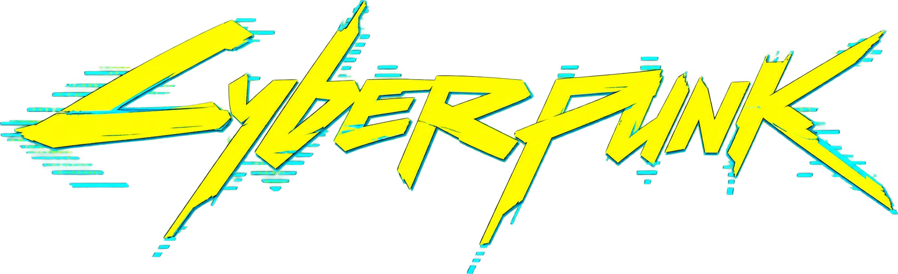
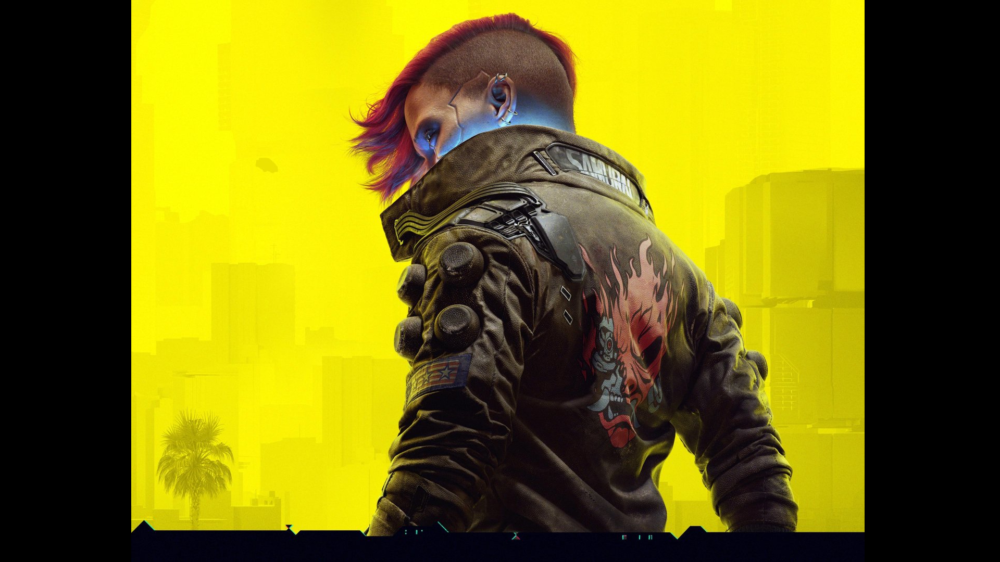
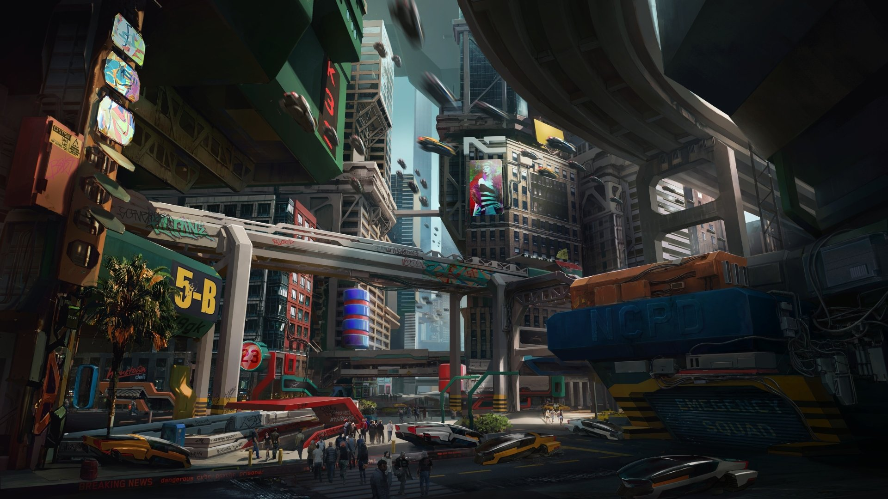

Siberpúnquê
Em Night City, dá pra trocar o pinto, os braços e até parte da memória. Quem pode pagar por tudo isso? E quem acaba pagando o preço?
Conhecer a origem ↓
1988 / RPG DE MESA
A origem
Antes de virar um lugar que dava pra percorrer na tela, Night City era uma cidade que você imaginava com os amigos. Mike Pondsmith criou o RPG de mesa Cyberpunk, publicado em 1988. Cada jogador criava um personagem. O grupo decidia o que fazer e os dados ajudavam a definir as consequências.

2020 / VIDEOGAME
Nas ruas de Night City
A CD PROJEKT RED trouxe esse universo para Cyberpunk 2077. Você joga como V, um mercenário que aceita um serviço arriscado e acaba com outra consciência presa na própria cabeça.
O problema de V torna a tecnologia algo pessoal. Se um implante começa a mudar suas lembranças e decisões, até onde você continua sendo você?
2022 / ANIME
Edgerunners
Na mesma cidade, David Martinez conhece Lucy e entra para um grupo que vive de trabalhos perigosos. A série da CD PROJEKT RED com o Studio Trigger mostra Night City pelos olhos de quem precisa sobreviver nela. Foi por essa história que eu entrei nesse universo.